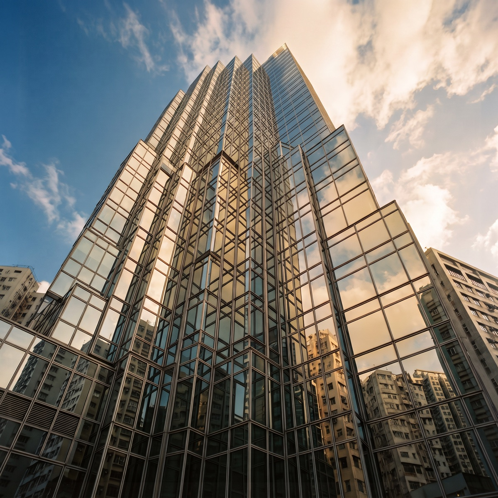

Chinachem Group Website Rebrand
Cards
Category
Cards
Two families and the rule that separates them: a plate means the card is a door to a place; a green title sweep means content to read. Almost every card in the design is one of these two with rows added or dropped, so each section below shows the family, then its settings.
01
Plate card
Doors to a place: image over a plate, no title sweep
Rule of use
- The plate means navigation. Use this family wherever the card is a door to a place or a section, a property, a similar property, a chapter of the site. Content you scan and read uses the editorial card instead.
- Pick by how much the destination needs explaining: the full plate carries a description and an explicit invitation; the property plate carries a name, its district and its type, and nothing else.
- No card in this family sweeps its title. The plate shift is the hover state, which is what separates it from the editorial family at a glance.
Settings
Full plate

Card title
A short line of meta or description under the title.
View propertyProperty plate
Card title
View
Interaction notes
- Hover / focus (both settings): the image zooms gently over 0.8s, the plate shifts ground instantly, and the arrow on the view row nudges right over 0.35s. The whole card is one link.
- Full plate: an image above a deep green plate carrying the title, one line of meta or description in softened white, and a lime view row. The plate lightens to green on hover.
- Property plate: a 4:3 image above a white plate carrying the name, then a foot row that pushes the meta left and the view row right. On hover the plate stays white; the image zooms 4% and the view arrow nudges right. Meta values are separated by an interpunct that is part of the design, not typed content.
- Property plate, on entry: cards fade up into place over 0.65s as the grid renders, each one starting a beat after the last for the first nine cards. With reduced motion enabled they appear immediately.
- Choosing between them: the full plate where the destination needs a line of explanation and an explicit invitation, chapter routing, a featured place. The property plate for the development and property listings, where the name, its district and its type are the whole message.
- Grids: the full plate fills the column the page gives it. The property plate runs the developments grid: three across, stepping to two on tablet and one on mobile.
- Responsive: the full plate's insets pull in on mobile so the desktop padding does not swamp a phone-width card; the property plate trades its landscape ratio for a shallower fixed-height crop.
- Source: the property plate is the portfolio page’s own variant rather than a shared component; the demo above quotes that page, verbatim.
02
Editorial card
Content you scan and read: green title sweep, image zoom
Rule of use
- The green title sweep means editorial. Use this family for content the reader scans and reads, news, awards, stories, businesses, and for cross-page routing at the end of a section. Doors to a property or a place use the plate card.
- One card, several rows. Every row beneath the image except the title is optional, so the same component runs from an image and title up to the card below. Build it by dropping rows, never by restyling them or resetting their order.
- Whatever the setting, the hover is identical: image zoom, green underline sweep, link arrow nudge. That consistency is the point of keeping them one family.
Settings
Image, title, role, description and link
Card title with the green underline sweepRole or sub-title line
A short excerpt held to a readable measure, sitting beneath the title.
Show bioInteraction notes
- Hover / focus (all settings): the image zooms gently over 0.8s, a green underline sweeps under the title over 0.45s, and the link row's arrow nudges right. The whole card is one link.
- Spacing and colour: every row sits the same step below the one before it. All text is ink apart from the meta row, which is grey.
- The card above: image, title, role, description and link, the setting the board page uses for its directors. Two further optional rows exist and are not shown here: a meta row and a spec row, described below in their fixed positions. Drop the rows you do not need and the rest close up on their own margins; do not reorder rows to suit a page.
- 1 · Image, required. A tall-ish landscape crop by default; a page may re-crop it (the onward pair runs a much wider letterbox, the carousel runs 16:9).
- 2 · Meta row, optional and not shown above. Category beside the date, both grey, in small text. Used by the news archive and article listings.
- 3 · Title, required. This is the row that sweeps: a hairline beneath it fills green from left to right on hover. The board page adds honours after a director's name in a softer tone.
- 4 · Role, optional. A sub-title under the name, set a size below the title at 24 on a 32 line; the board listings use it for a director’s role.
- 5 · Description, optional. Body size, held to a readable measure regardless of how wide the column runs.
- 6 · Spec row, optional and not shown above. The location followed by an interpunct and a free-text detail, in small text. The hotel and residences register uses it for location and room count.
- 7 · Link row, optional, and the label is free text: Show bio, Read more, Visit. It is the standard link, a label with a full-size arrow, and it anchors to the card bottom, so a grid of uneven cards keeps its link rows on one line.
- Source: every row above is shared except the spec row, which is the hospitality page’s own; the demo quotes that page, verbatim.
- Static setting: used for awards, where the card presents without navigating, no zoom, no sweep, default cursor. It is a div, not a link.
- Grounds: runs on white by default; a page may set its own ground.
- Grids: the three-up archive grid, stepping to two columns on tablet and one on mobile.